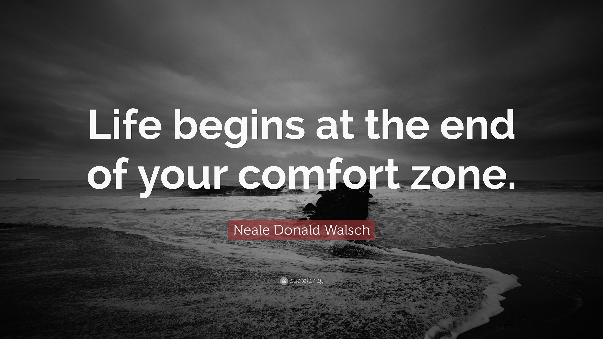
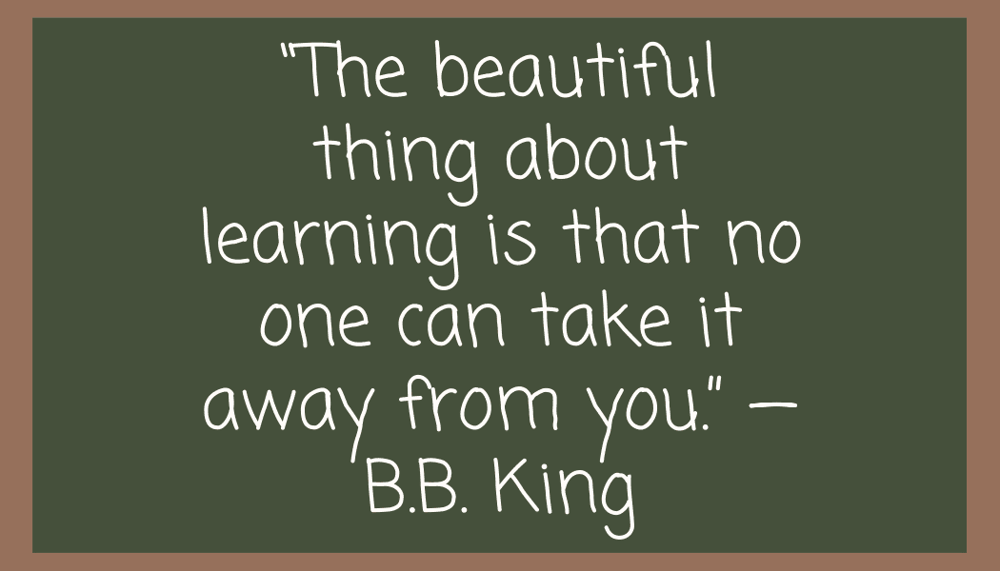
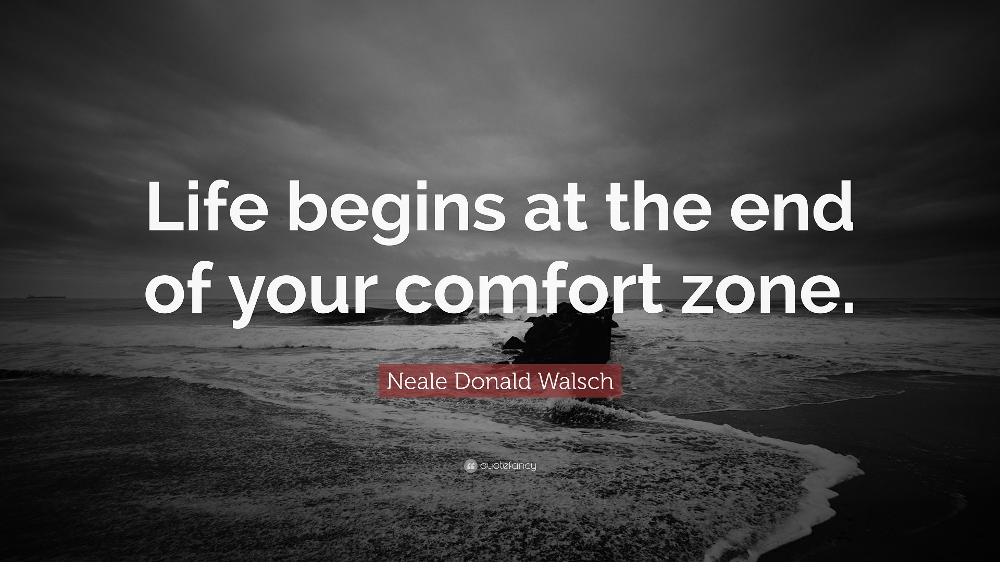
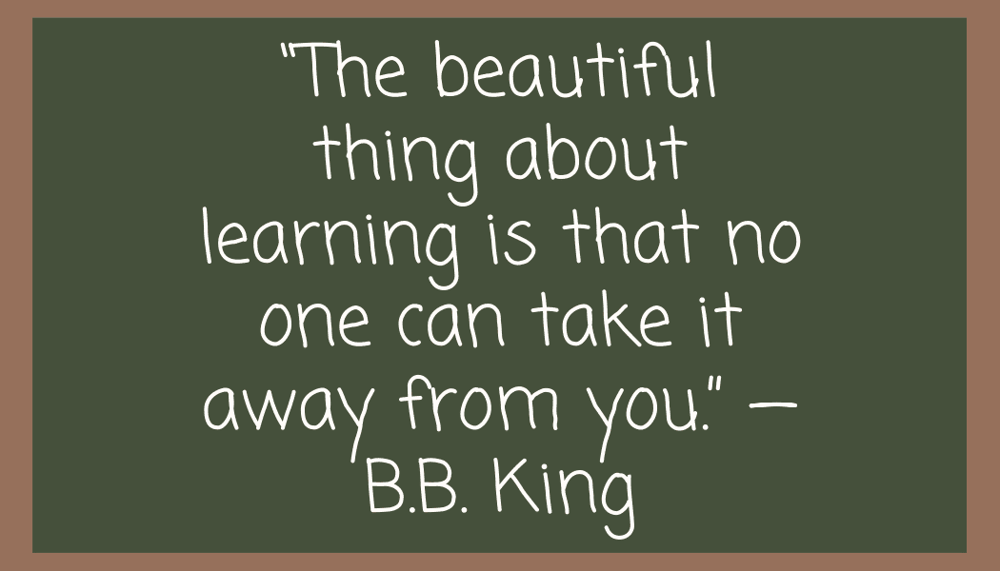

Daniel Brodowski, Jr. Web Developer
I'm always hungry to learn, constantly immersing myself in new skills and technologies to enhance my expertise. My dedication to learning drives me forward, propelling me towards my career goals in the dynamic world of web development.
Projects
Work I've done recently
About me
Get to know me a little more
I'm a 27-year-old enthusiast born and raised in Poland, but
currently calling the UK home. My journey into the world of
technology began when I completed my studies as an IT Technician
in 2017. Since then, I've been honing my skills in various
tech-related fields.
By day, you'll find me at AMI Metals, where I work as a Saw
Operator, ensuring precision and efficiency in our processes. But
when the workday winds down, I dive headfirst into my passion for
web development. I'm constantly exploring new languages,
frameworks, and design principles to expand my skill set and craft
meaningful digital experiences.
Outside of the tech realm, I find solace in nature through hiking
adventures, soaking in the beauty of the great outdoors. And when
I'm not exploring trails, you can bet I'll be immersed in the
virtual worlds of computer games, where creativity knows no
bounds.
Join me on this journey as I continue to learn, grow, and create
in both the digital and physical realms. Let's connect and explore
the endless possibilities together!
Get some motivation
 


